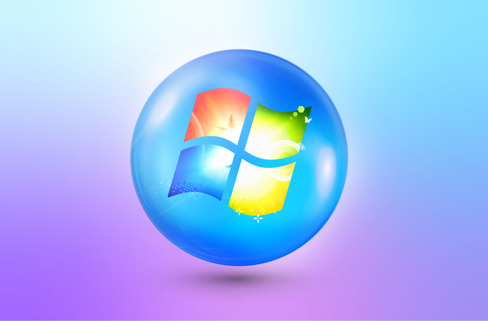

SISTEMAS OPERATIVOS
¿Qué es un sistema operativo?
Un sistema operativo es un conjunto de programas que permite manejar la memoria, disco, medios de almacenamiento de información y los diferentes periféricos o recursos de nuestra computadora, como son el teclado, el mouse, la impresora, la placa de red, entre otros
Sistemas operativos más usados
- Windows: Windows es el nombre de una familia de distribuciones de software para PC, servidores, sistemas empotrados y antiguamente teléfonos inteligentes desarrollados y vendidos por Microsoft y disponibles para múltiples arquitecturas, tales como x86, x86-64 y ARM.

- Mac OS: Mac OS es el nombre del sistema operativo creado por Apple para su línea de computadoras Macintosh, también aplicado retroactivamente a las versiones anteriores a System 7.6, y que apareció por primera vez en System 7.5.1.

- Linux: GNU/Linux es un sistema operativo tipo Unix compuesto por software libre y de código abierto. GNU/Linux surge de las contribuciones de varios proyectos de software, entre los cuales destacan GNU y el kernel «Linux».

- Android: Android es un sistema operativo móvil basado en el núcleo Linux y otros software de código abierto. Fue diseñado para dispositivos móviles con pantalla táctil, como teléfonos inteligentes, tabletas, relojes inteligentes Wear OS, automóviles con otros sistemas a través de Android Auto, al igual los automóviles con el sistema Android Automotive y televisores Android TV.